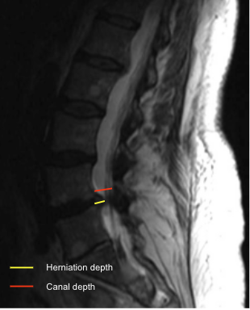

Adapted from: Feger J, Er A, Yap J, et al. Lumbar spine protocol (MRI). Reference article, Radiopaedia.org (Accessed on 01 Jan 2026) https://doi.org/10.53347/rID-147093
1) Description of Measurement
Disc herniation size quantifies the degree of posterior disc displacement beyond the normal vertebral body margin and expresses the extent of neural element encroachment. It can be reported as:
This measurement is essential for grading severity, surgical planning, and correlating imaging with radicular symptoms.
2) Instructions to Measure
3) Normal vs. Pathologic Ranges
Key points:
4) Important References
Fardon DF, Williams AL, Dohring EJ, et al. Lumbar disc nomenclature: version 2.0: Recommendations of the combined task forces of the North American Spine Society, the American Society of Spine Radiology and the American Society of Neuroradiology. Spine J. 2014 Nov 1;14(11):2525-45. doi: 10.1016/j.spinee.2014.04.022.
Modic MT, Ross JS. Lumbar degenerative disk disease. Radiology. 2007 Oct;245(1):43-61. doi: 10.1148/radiol.2451051706.
Jensen MC, Kelly AP, Brant-Zawadzki MN. MRI of degenerative disease of the lumbar spine. Magn Reson Q. 1994 Sep;10(3):173-90.
5) Other info....
Always specify:
Correlate with: